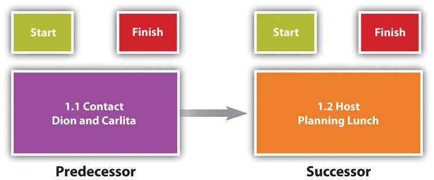
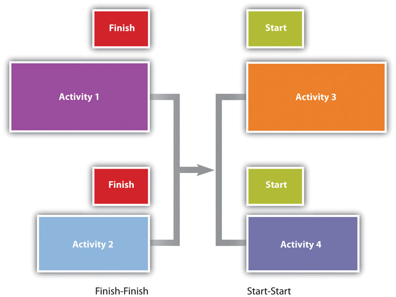
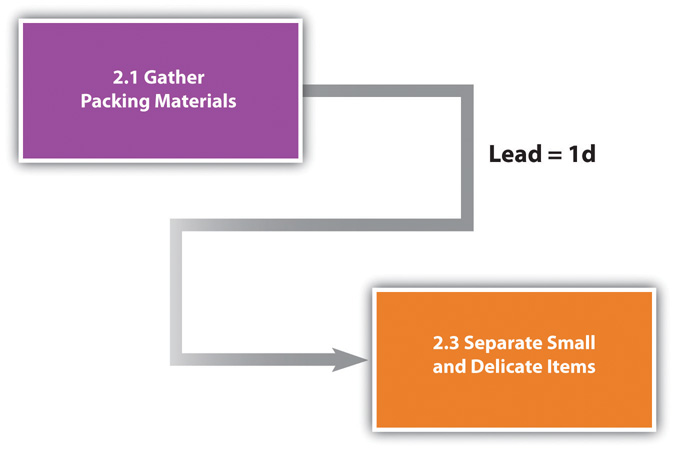
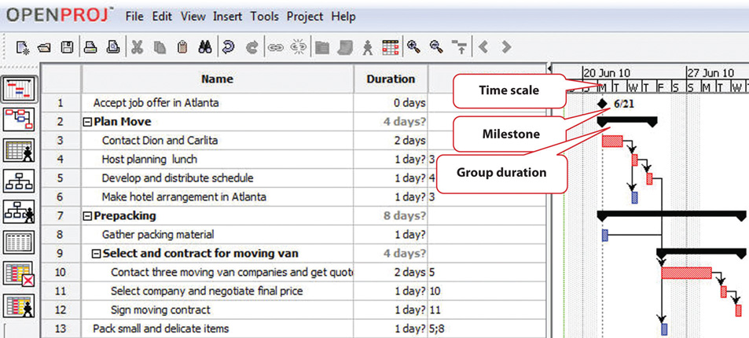
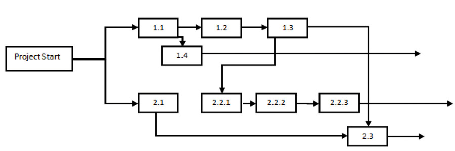

According to the Project Management Institute (PMI), project time management includes the following elements:Project Management Institute, Inc., A Guide to the Project Management Body of Knowledge (PMBOK Guide), 4th ed. (Newtown Square, PA: Project Management Institute, Inc., 2008), 129.
The list of activities, their relationship to each other, and estimates of durations and required resources comprise the work breakdown structure (WBS). The project WBS is a hierarchicalClassified according to criteria into successive levels.—classified according to criteria into successive levels—listing and grouping of the project activities required to produce the deliverables of the project. The WBS represents a breakdown of the project into components that encompass the entire scope of the project. Each level of the WBS hierarchy represents a more detailed description of the project work so that the highest level represents broad categories, and the lower levels represent increasing amounts of detail.
Larger and more complex projects often require a larger WBS. The size of the WBS is directly related to the amount of work on the project and how that work is divided into work packages. The WBS can be developed around the project phases or the project units or functions that will be performing the work. A WBS organized around the project phases facilitates the understanding of the amount of work required for each phase of the project. A WBS developed around the project units or functions of the project facilitates the understanding of the amount of work required for each function.
The following example, named John’s move, has a low level of complexity compared to a larger project. Normally, this project would not receive the amount of detailed planning described in the following examples, but the authors chose to use a basic project that is familiar to most students to help them focus on learning the new concepts.
John has a small but important project. He has accepted a job in Atlanta and now has to move from Chicago to Atlanta and be there, ready to work, right after the Christmas holidays. If the furniture arrives in good condition at least two days before John starts work, and for less than Five thousand dollars, the project will be a success. The move to Chicago five years ago cost five thousand dollars, but John is smarter now and will use his friends to help, so he is confident he can stay within budget.
Developing a WBS begins by defining and developing lists of all activities—work performed on the project that consumes project resources, including cost and time—needed to accomplish the work of the project. The first draft of the WBS includes activities at the highest level of the hierarchy or the management level and typically includes the major activities or summary activities required to accomplish the deliverables identified in the project scope of work.
On John’s move project, these top-level activities are numbered 1.0, 2.0, 3.0, and so on. For example, a plan for the move is the major deliverable from 1.0 Plan Move, as shown below.
Figure 8.3 Top Level of WBS

The work breakdown structure is then decomposedSeparated into basic elements.—broken down into smaller units. The 1.1, 1.2, and 1.3 numbers are the first subdivision of the work. For example, one of John’s Summary Level Activities is Packing (3.0). Although some minor packing (delicate items: 2.4) are packed under another summary activity, 3.3 is the major packing and includes the coordination and support of labor (friends Dion and Carlita). The activity is then decomposed—separated into basic elements—to the next level by listing the individual rooms that need packed, as shown below.
Figure 8.4 Major Activity Decomposed into Smaller Activities

The WBS could be decomposed further to a greater level of detail by listing the tasks needed for each activity. For example activity 3.3.3, Pack Bedroom, can be decomposed into additional tasks, such as 3.3.3.1 Pack Closet, 3.3.3.2 Pack Drawers, and 3.3.3.3 Pack Blankets. This type of numbering of the activities is called intelligent numbering. In intelligent numbering, the numbering system has meaning so that a member of the project team knows something about the activity by the number of the activity. For example, any activity associated with packing begins with a 3; even picking up donuts can be an activity that supports packing. The donuts are a form of payment for the labor of Dion and Carlita.
The WBS is developed or decomposed to the level that the manager needs to control or manage the project. Typically, larger and more complex projects require a more detailed WBS.
After the project team has created the WBS, each activity is reviewed and evaluated to determine the durationTime from beginning to end of an activity. (how long it will take to accomplish from beginning to end) and what resourcesTime and materials. (time, materials, facilities, and equipment) are needed. An estimate is an educated guess based on knowledge, experience, and inferenceProcess of deriving conclusions based on assumptions.—the process of deriving conclusions based on assumptions. The accuracy of the estimate is related to the quality of the knowledge and how that knowledge is applied. The person with the most knowledge may not be the most objective person to provide duration estimates. The person responsible for the work may also want to build in extra time. Multiple inputs into the duration estimate and a more detailed WBS help reduce bias—the making of decisions based on a prejudged perspective.
The unit of time used to develop the activity duration is a function of the level of detail needed by the user of the schedule. The larger and more complex the project, the greater the need for detail, which usually translates into shorter durations for activities.
On a new plant start-up, the plant manager may need to know when the new employees will start training, when they will be fully trained, and when they can begin working in the plant. The plant human resources manager may need to know what skills workers need and how much time each training class will take. The schedule detail the HR manager needs will include activities to locate facilities, schedule training, write contracts for trainers, and manage the initiation of training classes. The trainer will need an even greater level of detail, which could be measured in days or even hours.
On our John’s move example, the project schedule may have been just as effective without detailing the packing of the individual rooms in the old apartment. If we deleted these items, would John know when he needed to pack each one of these rooms? If the answer is yes, then we may not need that level of detail.
The activity duration is the length of time the activity should take to complete from beginning to end. The unit of duration is typically working days but could include other units of time such as hours, weeks, or months. The unit chosen should be used consistently throughout the schedule.
An important event, such as a ground-breaking ceremony or receipt of occupancy from the building inspector, is called a milestoneAn important point in a project without duration or resources.. A milestone has no duration or resources. It is simply an indicator of an important point in the project.
A common resource constraint is availability. To consider the availability of team members, consultants, and key pieces of equipment, you can create a resource calendarCalendar that indicates working days and days off for a group or individual. for each that indicates which days are available and which are days off for a group, an individual, or a project asset such as a piece of important equipment. A calendar for team members from the same company could be the company calendar that shows working days, weekend days, and holidays. Individual team members can have individual calendars that show their vacation days or other days off, such as parental leave days. If major pieces of equipment are only available for certain periods of time, they can be given a resource calendar. Resource calendars become important tools when changes must be made to the schedule. When a resource calendar is applied to a duration estimate, the duration in days is distributed across the available calendar days. For example, if the duration is three days and the start date of the activity is Thursday, the activity would begin on Thursday and end on Monday of the following week, assuming the resource calendar shows that the person has the weekend off. If the weekend included an extra day off for a holiday like Labor Day, shown in the calendar in Figure 8.6, the completion day of the same three-day activity would be pushed to Tuesday.
Figure 8.6

Nonworking days can be designated in a calendar.
Determining the schedule of a project begins by examining each activity in the WBS to determine its relationship to the other activities.
The project logicActivity sequence showing predecessor and successor activities. is the development of the activity sequence or determining the order in which the activities will be completed. The process for developing the project logic involves identifying the predecessorsActivity that comes before.—activities that come before—and successorsActivity that comes afterward.—the activities that come after.
In our example of John’s move, contacting Dion and Carlita—activity 1.1—comes before the lunch meeting is scheduled. You must logically contact Dion and Carlita before you schedule your Host Planning Lunch—activity 1.2. Your conversation with Dion and Carlita will provide you with dates they are available and establish their commitment to help you move. Therefore, the conversation with Dion and Carlita is a predecessor to the Host Planning Lunch Activity. This relationship is diagramed below.
Figure 8.7 Relationship between Two Activities
These terms define a relationship that is similar to a family relationship like father and son. The father exists in time before the son. Similarly, each element of the diagram can have predecessor-successor relationships with other elements, just like a father can be the son of someone else. Unlike the biological father-son relationship, activities can have more than one predecessor.
The relationship between a predecessor activity and a successor activity is called a dependencyRelationship between activities that affects their sequence.. The successor activity starts after and is dependent on the predecessor activity. Because the conversation with Dion and Carlita must take place before a planning meeting can be scheduled, this is called a natural dependencySequence that can be determined logically. because the relationship can be inferred logically. Activities that have predecessor-successor relationships occur sequentiallyOne after the other.—one after the other. Another term for this type of relationship is finish-startSequence of activities where the first activity must end before the next activity can begin., which means the first activity must finish before the next one can start. Refer to the figure above.
Some activities take place concurrentlyAt the same time.—at the same time. If they must begin at the same time, they have a start-startConcurrent activities begin at the same time. relationship. If the activities can start at different times but they must finish at the same time, they have a finish-finishConcurrent activities end at the same time. relationship. Refer to Figure 8.8.
Figure 8.8
Concurrent activities can be constrained to finish at the same time or start at the same time.
The figure below shows the activities in John’s move with the predecessors identified for the Plan Move and Prepacking groups of activities. Because the finish-start relationship is by far the most common, the type of relationship is assumed to be finish-start unless otherwise mentioned.
Figure 8.9 Outline of Activities with Predecessors Identified

Most activities in a network diagram have a finish-start relationship. If a certain amount of time must go by before a successor activity can begin, the required delay is called lag timeAmount of time that must separate the finish of one activity and the start of the next sequential activity.. For example, concrete does not reach its full strength for several days after it is poured. Lag time is required between the end of the pouring process and the beginning of construction that puts stress on the concrete as diagrammed in Figure 8.10. Similarly, you must allow lag time for payment checks to be processed by the banking system before you can spend the money.
Figure 8.10

Required time between activities is lag time.
In some cases, the successor activity can overlap the end of its predecessor activity and begin before the predecessor is finished. This is called lead timeAmount of time that the start of the next activity can overlap the finish of its predecessor..
In John’s move, you might begin separating the small and delicate items that will be packed in step 2.3 before you get the packing materials in step 2.1 so that when the materials are available, step 2.3 is already partially completed. If the preparing the small items for packing can overlap its predecessor and shortens the time it takes to accomplish both tasks by a day, it has a lead time of one day.
Figure 8.11
Overlap is called the lead time of the successor activity.
The characteristics and identifiers of an activity are its attributesCharacteristic of an entity or object..
At this point in the process of analyzing John’s move, each activity has an identifying code, a short description, predecessors, and lead or lag times, as shown in a partial table of activities in Figure 8.12 "Table of Attributes".
Figure 8.12 Table of Attributes

Milestones are significant events in your project. An effective milestone schedule will capture the major constraints to the project schedule and provide a summary level overview of the project. Even though milestone events are significant to the project, they consume no resources and have no duration. Milestones are usually indicated on the project schedule with a diamond and often have a vertical line on a time-scaled graph to show the relationship of various schedule paths to the milestone.
In our John’s move project, we might create a milestone called “all packing complete” to represent the date when everything is packed and ready for the moving van. Any delay in this date will mean a delay in the arrival of the moving van in Chicago, a delay in the arrival of the moving van in Atlanta, and a delay of all the unpacking and other downstream activities. See Figure 8.13 "Gantt Chart".
Relationships between activities are easier to recognize if they are presented using graphics such as bar charts or a network of connected boxes.
The type of bar chart used to illustrate activity relationships in a project is the Gantt chartBar chart used to indicate duration and relationships between project activities.. The Gantt chart was developed by Henry Gantt and used on major projects, including building the Hoover Dam and the U.S. interstate highway system.Reference.com, “Henry Gantt,” http://www.reference.com/browse/wiki/Henry_Gantt (accessed July 27, 2009). The Gantt chart, also called a bar chart, is a time-scaled graphic that represents each activity with a bar that reflects the duration, start, and finish time, as shown in Figure 8.13 "Gantt Chart".
Figure 8.13 Gantt Chart
A Gantt chart is easy to read and provides sufficient information for project team members to plan activities within a short time frame. For many larger projects, a two-week bar chart, extracted from the larger master schedule, provides the information needed for team members and contractors to coordinate activity details. The Gantt chart provides information for simple planning but is limited because a Gantt chart does not illustrate complex relationships well.
People recognize relationships and patterns more effectively when they look at diagrams like the one in Figure 8.14 "Project Network Diagram". The precedence diagram method (PDM)Technique for graphically displaying the logic of scheduled activities using boxes and arrows. is a technique for graphically displaying the logic of the schedule by placing the activities in boxes with arrows between them to show the precedence-successor relationships. The boxes in this type of diagram are called nodesAn activity in a network diagram. and the arrows indicate finish-start relationships. Compare the diagram in Figure 8.14 "Project Network Diagram" to the outline in Figure 8.9 "Outline of Activities with Predecessors Identified" to see how much easier it is to trace a sequential path from one activity to the next in the precedence diagram. This type of diagram is also called a project network diagramGraphic representation of the sequencing of project activities..
Figure 8.14 Project Network Diagram
Compare Charts
Perceptions of graphic representations of data differ among individuals. Consider the bar chart and network diagram in this section. Describe which type of chart conveys the important aspects of the project best to you personally and why you think that is the case. Alternatively, describe which aspects of the project are conveyed to you best by which type of chart.